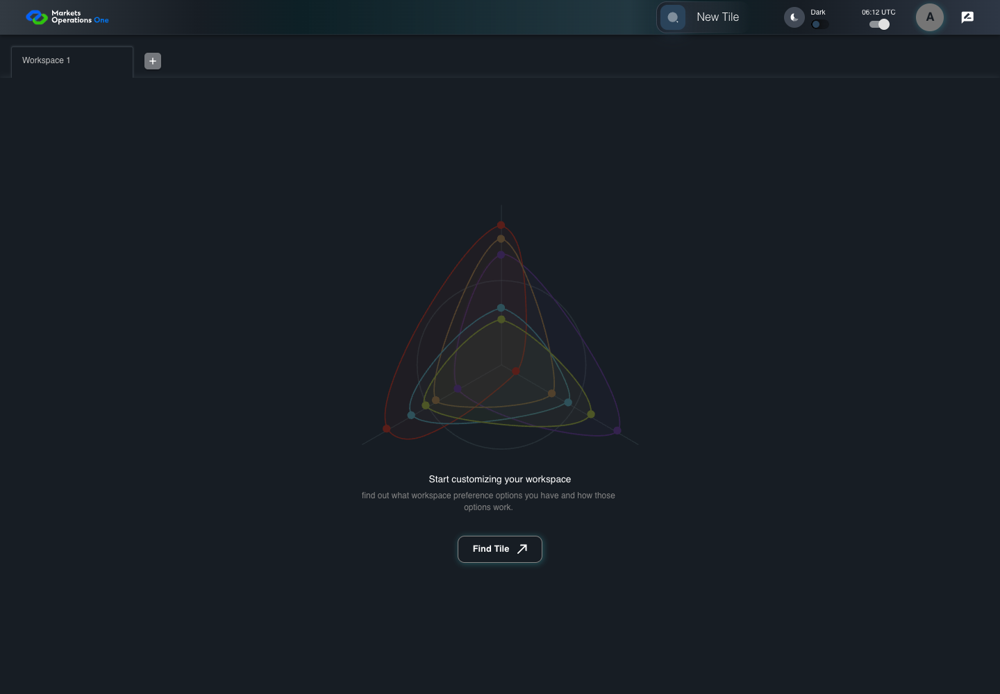

UI-SHL-001 empty workspace offers tile discovery
PASS · application/run-050/ui-shl-001-empty-workspace-offers-tile-discovery-acb9dc0a6975-attempt-1 · ACTUAL_APPLICATION_LOCAL_SERVICES
Actual current React MFE; controlled accepted login and activity renewal responses; UI-USER-01; empty W1 seeded; no real permission or BFF persistence verification.
2026-10-22T06:12:24.066Z to 2026-10-22T06:12:27.524Z
Assertions and result · Artifact manifest · Exact run inputs and source hashes
Result SHA-256:8f00c7379d7d216e8cf257c9bba2fb539dbf874ee0f8b6a0734758217eb763faScreenshot capture: CAPTURED. Named frames: 6.
Step screenshot bindings: COMPLETE. 5/5 canonical steps have execution screenshots.
Bindings measure structural coverage only. They do not establish screenshot content quality or relevance.
Screenshot content review: NOT_REVIEWED. Recorded context: 0/6 frames. Identical image bytes: 4 repeated frames. Recorded context does not establish human visual review.
Canonical step timeline
Given User A is authenticated as fixture UI-USER-01 with the case-specific permissions
Execution: PASSED.
1. step-01 Visible state after step 1: Given User A is authenticated as fixture UI-USER-01 with the case-specific permissions
2026-10-22T06:12:25.739Z · 1440×1000
Step: /Users/lushevol/code/github/ratan-release-impact/workbench/tasks/ui-test-coverage-20261022/test-cases.md:5405
SHA-256:b0d8bd3f9faf25b9831e8e67fc0e92f9f9cff7591bb746b16bfcb116162ff137And W1 has no containers
Execution: PASSED.
2. step-02 Visible state after step 2: And W1 has no containers
2026-10-22T06:12:26.621Z · 1440×1000
Step: /Users/lushevol/code/github/ratan-release-impact/workbench/tasks/ui-test-coverage-20261022/test-cases.md:5406
SHA-256:0d1b87c06564371cba1d3a5cc6567fb5a3c75dcc499cae2acc3c1128b3eecfd4When User A clicks tab with source identity "Workspace Name textbox value Workspace 1" inside the shell tablist named "workspaces"
Execution: PASSED.
3. step-03 Visible state after step 3: When User A clicks tab with source identity "Workspace Name textbox value Workspace 1" inside the shell tablist named "workspaces"
2026-10-22T06:12:26.749Z · 1440×1000
Step: /Users/lushevol/code/github/ratan-release-impact/workbench/tasks/ui-test-coverage-20261022/test-cases.md:5407
SHA-256:0d1b87c06564371cba1d3a5cc6567fb5a3c75dcc499cae2acc3c1128b3eecfd4Image bytes match frame 2. An unchanged image can be valid for consecutive assertions. This match does not establish correct step content.
Then text with text "Start customizing your workspace" inside the selected W1 tabpanel is visible
Execution: PASSED.
4. step-04 Visible state after step 4: Then text with text "Start customizing your workspace" inside the selected W1 tabpanel is visible
2026-10-22T06:12:26.840Z · 1440×1000
Step: /Users/lushevol/code/github/ratan-release-impact/workbench/tasks/ui-test-coverage-20261022/test-cases.md:5408
SHA-256:0d1b87c06564371cba1d3a5cc6567fb5a3c75dcc499cae2acc3c1128b3eecfd4Image bytes match frame 3. An unchanged image can be valid for consecutive assertions. This match does not establish correct step content.
And button named "Find tile" inside the selected W1 tabpanel is visible
Execution: PASSED.
5. step-05 Visible state after step 5: And button named "Find tile" inside the selected W1 tabpanel is visible
2026-10-22T06:12:26.912Z · 1440×1000
Step: /Users/lushevol/code/github/ratan-release-impact/workbench/tasks/ui-test-coverage-20261022/test-cases.md:5409
SHA-256:0d1b87c06564371cba1d3a5cc6567fb5a3c75dcc499cae2acc3c1128b3eecfd4Image bytes match frame 4. An unchanged image can be valid for consecutive assertions. This match does not establish correct step content.
Additional named frames

The final visible state after the named test assertions.
2026-10-22T06:12:27.044Z · 1440×1000Step: Test source: /Users/lushevol/code/github/ratan-release-impact/workbench/e2e/audit-specs/workspaces.spec.ts:8
SHA-256:
0d1b87c06564371cba1d3a5cc6567fb5a3c75dcc499cae2acc3c1128b3eecfd4Image bytes match frame 5. An unchanged image can be valid for consecutive assertions. This match does not establish correct step content.
Screenshots establish visible state only. Assertions and traces support functional claims.